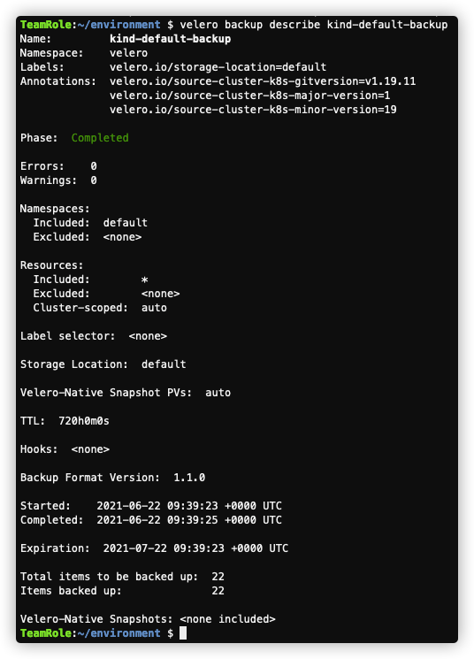
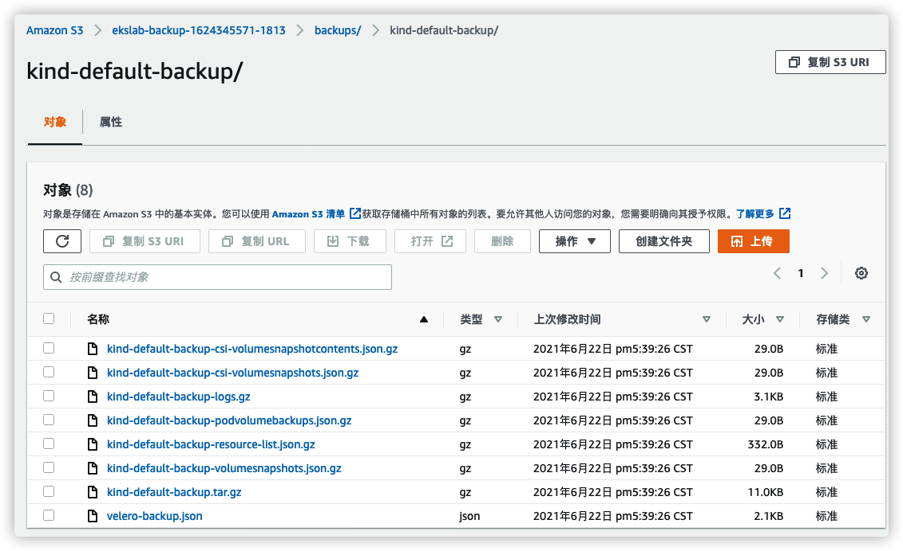

C-使用Velero迁移应用
Velero（以前称为Heptio Ark）是一个开源工具，可以安全地备份和还原，执行灾难恢复以及迁移Kubernetes 集群资源和持久卷. 用于：
- 备份集群并在丢失的情况下进行还原
- 将集群资源迁移到其他集群
- 将生产集群复制到开发和测试集群
前置准备
- 打开 Cloud9 IDE，确保在environment目录下
cd ~/environment
- 创建用于存储集群备份数据的 S3 桶
美东区域（us-east-1），请用如下命令
export VELERO_BUCKET=$(aws s3api create-bucket \
--bucket ekslab-backup-$(date +%s)-$RANDOM \
--region $AWS_REGION \
--| jq -r '.Location' \
--| tr -d /)
如果不是美东区域，请用如下命令
export VELERO_BUCKET=$(aws s3api create-bucket \
--bucket ekslab-backup-$(date +%s)-$RANDOM \
--region $AWS_REGION \
--create-bucket-configuration LocationConstraint=$AWS_REGION \
--| jq -r '.Location' \
--| cut -d'/' -f3 \
--| cut -d'.' -f1)
- 设置 VELERO_BUCKET 环境变量
echo "export VELERO_BUCKET=${VELERO_BUCKET}" | tee -a ~/.bash_profile
- 为Velero准备一个IAM用户
aws iam create-user --user-name velero
- 附加需要的权限
- 创建权限策略
cat > velero-policy.json <<EOF
{
"Version": "2012-10-17",
"Statement": [
{
"Effect": "Allow",
"Action": [
"ec2:DescribeVolumes",
"ec2:DescribeSnapshots",
"ec2:CreateTags",
"ec2:CreateVolume",
"ec2:CreateSnapshot",
"ec2:DeleteSnapshot"
],
"Resource": "*"
},
{
"Effect": "Allow",
"Action": [
"s3:GetObject",
"s3:DeleteObject",
"s3:PutObject",
"s3:AbortMultipartUpload",
"s3:ListMultipartUploadParts"
],
"Resource": [
"arn:aws:s3:::${VELERO_BUCKET}/*"
]
},
{
"Effect": "Allow",
"Action": [
"s3:ListBucket"
],
"Resource": [
"arn:aws:s3:::${VELERO_BUCKET}"
]
}
]
}
EOF
- 关联策略到 velero 用户
aws iam put-user-policy \
--user-name velero \
--policy-name velero \
--policy-document file://velero-policy.json
- 创建AKSK
aws iam create-access-key --user-name velero > velero-access-key.json
- 确认AKSK正确创建
cat velero-access-key.json
输出结果类似如下，里面会有生成的AccessKeyId和SecretAccessKey：
{
"AccessKey": {
"UserName": "velero",
"Status": "Active",
"CreateDate": "2021-06-22T07:36:35+00:00",
"SecretAccessKey": <AWS_SECRET_ACCESS_KEY>,
"AccessKeyId": <AWS_ACCESS_KEY_ID>
}
}
- 准备 credentials 文件
- 在 (~/environment) 目录下，创建如下文件
export VELERO_ACCESS_KEY_ID=$(cat velero-access-key.json | jq -r '.AccessKey.AccessKeyId')
export VELERO_SECRET_ACCESS_KEY=$(cat velero-access-key.json | jq -r '.AccessKey.SecretAccessKey')
cat > velero-credentials <<EOF
[default]
aws_access_key_id=$VELERO_ACCESS_KEY_ID
aws_secret_access_key=$VELERO_SECRET_ACCESS_KEY
EOF
安装 Velero Cli
参考 https://github.com/vmware-tanzu/velero-plugin-for-aws
- 下载客户端工具
- 下载当前最新版本 latest release’s 例如 1.6.0
wget https://github.com/vmware-tanzu/velero/releases/download/v1.6.0/velero-v1.6.0-linux-amd64.tar.gz
- 解压安装并检查
tar -xvf velero-v1.6.0-linux-amd64.tar.gz -C /tmp
sudo mv /tmp/velero-v1.6.0-linux-amd64/velero /usr/local/bin
velero version
当前还没有安装服务端，提示 Get Server Version 错误是正常的
部署 Velero Server 到 Kind
- 首先确认当前 context 为 kind-kind
kubectl config current-context
如果不是，请用下面命令切换
kubectl config use-context kind-kind
- 安装 Velero Server 端
velero install \
--provider aws \
--plugins velero/velero-plugin-for-aws:v1.2.0 \
--bucket $VELERO_BUCKET \
--backup-location-config region=$AWS_REGION \
--snapshot-location-config region=$AWS_REGION \
--secret-file ./velero-credentials
- 检查部署
Velero 资源会部署到专门的namespace：“velero”
kubectl --context kind-kind get all -n velero
- 编辑 deployment
- 找出 cluster name
kubectl config view --minify -o jsonpath='{.clusters[].name}'
类似输出 kind-kind
添加到velero部署环境变量，添加 AWS_CLUSTER_NAME 到 spec.template.spec.env 下
kubectl --context kind-kind edit deploy/velero -n velero
- 再次检查部署
kubectl --context kind-kind describe deployment velero -n velero
部署 Velero Server 到 EKS
- 切换到 eks 集群 context
kubectl config use-context "i-010dcc656a3c7754c@ekslab.us-east-1.eksctl.io"
- 安装 Velero Server 端
velero install \
--provider aws \
--plugins velero/velero-plugin-for-aws:v1.2.0 \
--bucket $VELERO_BUCKET \
--backup-location-config region=$AWS_REGION \
--snapshot-location-config region=$AWS_REGION \
--secret-file ./velero-credentials
- 检查 velero namesapce
kubectl get all -n velero
- 编辑 deployment
- 找出 cluster name
kubectl config view --minify -o jsonpath='{.clusters[].name}'
类似输出 ekslab.us-east-1.eksctl.io
添加到velero部署环境变量，添加 AWS_CLUSTER_NAME 到 spec.template.spec.env 下
kubectl edit deploy/velero -n velero
- 再次检查 velero namesapce 资源，确保仍然正常运行
kubectl get all -n velero
- 检查 default namespace
kubectl get pods
目前 default namespace 尚未部署任何资源
备份迁移
参考 https://velero.io/docs/v1.6/migration-case/
备份集群 1（kind）
- 首先切换到 kind context
kubectl config use-context "kind-kind"
- 备份 default namespace
velero backup create kind-default-backup --include-namespaces default
- 检查备份状态
velero backup describe kind-default-backup

确保处于 Completed 状态 如果发现问题，可以通过以下命令查看日志
velero backup logs kind-default-backup
- 进入 S3 控制台 https://s3.console.aws.amazon.com/s3/home?region=us-east-1，查看是否有备份文件生成

恢复到集群 2（eks）
- 首先切换到 eks context 注意替换 context 名字
kubectl config use-context "i-010dcc656a3c7754c@ekslab.us-east-1.eksctl.io"
- 检查是否能看到集群1（kind）的备份
velero backup get
- 查看备份详细信息
velero backup describe kind-default-backup
- 恢复 kind default namespace 到 eks default namespace
velero restore create --from-backup kind-default-backup
- 检查恢复状态
- 查看恢复任务列表
velero restore get
查看任务明细
velero restore describe kind-default-backup-20210622095748
确保处于 Completed 状态，如果有问题，可以查看日志
velero restore logs kind-default-backup-20210622095748
- 检查部署情况
kubectl get all
- 创建 counter-eks 目录（在 ~/environment 下）
cd ~/environment
mkdir counter-eks
cd counter-eks
- 更新 counter-service 服务配置
- 导出当前 counter-service YAML
kubectl get svc counter-service -o yaml > counter-service.yaml
- 利用EKS集成的 LoadBalancer 快速发布到公网
编辑文件：
vi counter-service.yaml
- 将 type: NodePort 改成 type:
LoadBalancer - 将 port: 8000 改为 port: 80
- 删除 nodePort: 30000
类似如下：
然后再应用更新
kubectl apply -f counter-service.yaml
- 查看更新后的服务
kubectl get svc
- 在浏览器访问服务
- 获取地址
echo "http://"$(kubectl get svc counter-service --output jsonpath='{.status.loadBalancer.ingress[0].hostname}')

这里 Count: 0 符合预期，将在后续模块迁移数据。参考官方文档： Note that Velero does not natively support the migration of persistent volumes snapshots across cloud providers. https://velero.io/docs/v1.6/migration-case/